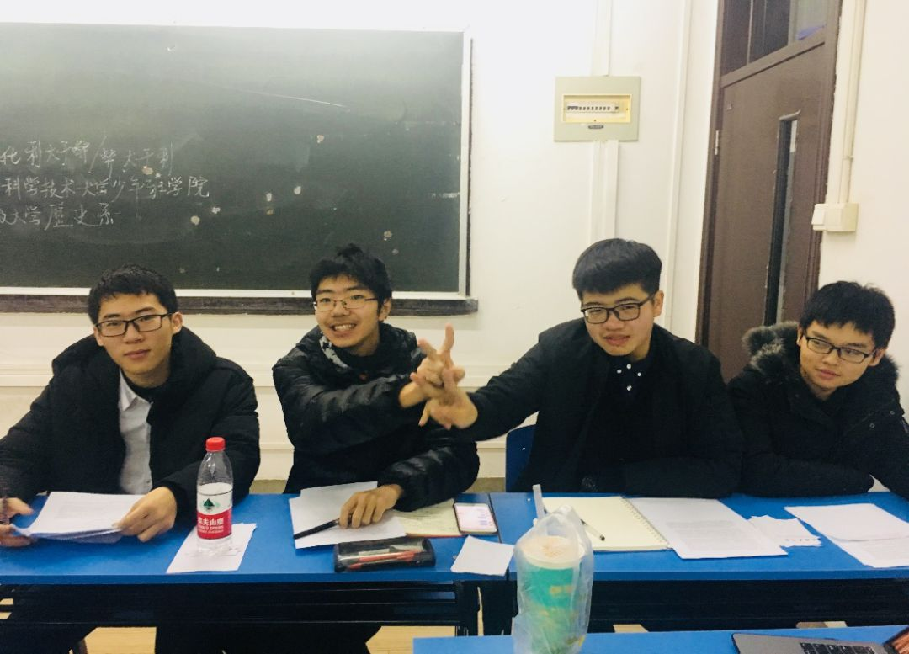
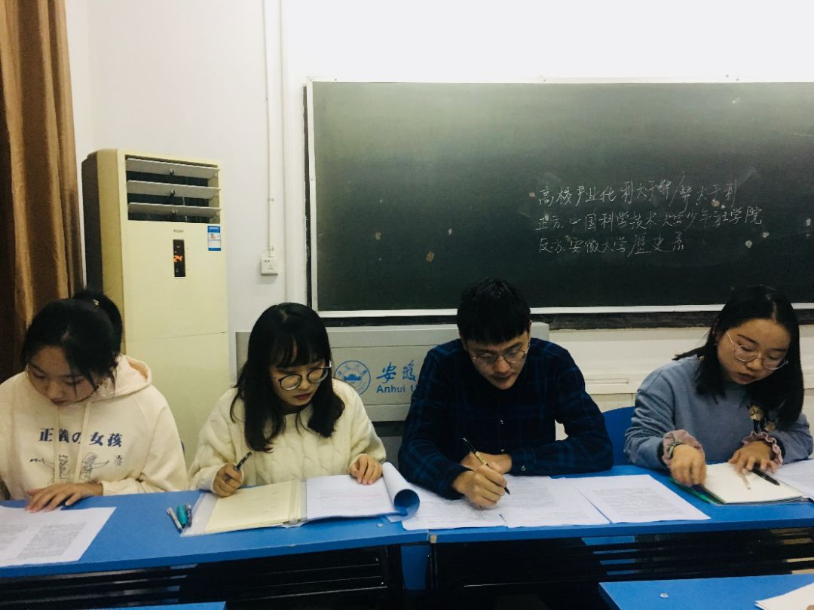
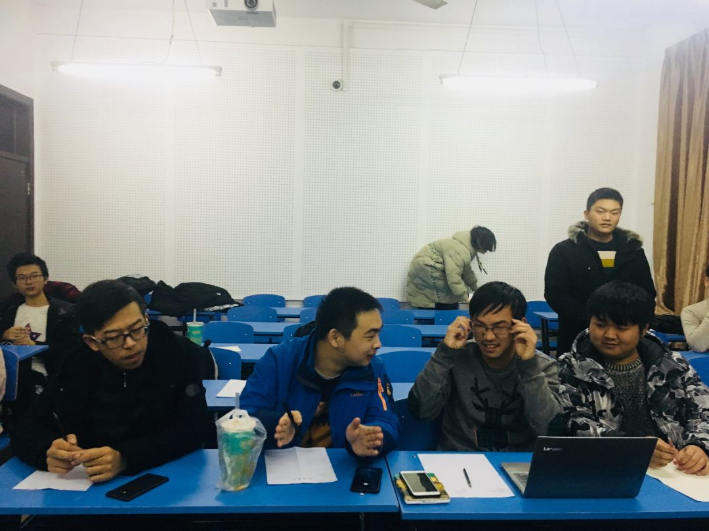
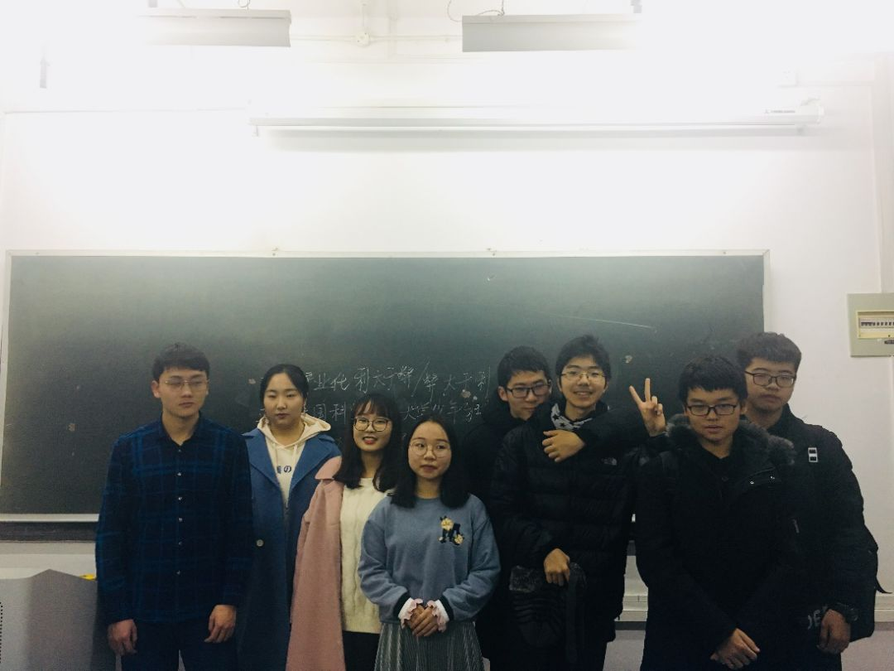

发布时间:2018-12-20 作者:中国科大少年班学院学生会
安大辩论友谊赛——高校产业化利弊
12月14日晚八点，中科大少年班学院与安大历史系的辩论友谊赛如期在安大文西楼213室如期举行。双方的辩题是：高校产业化利大于弊/弊大于利，先附上小可爱们的帅照：
正方少年班学院：

反方安大历史系：

以及来自两个学校的四位评委：


正方首先指出我国目前科研经费不足，人才短缺的现状，并指出高校产业化能加快科研成果“变现”，同时促进高校与企业的合作也能丰富学校的内涵，为科研提供经济资源。接下来反方说明了教育的公益性与企业的功利性有着极大矛盾，产业化以营利为目的，只会让高校沦为企业的“工厂”，使科学与教育坠入金钱的地狱之中。与此同时，当高校产业化后必然有企业资金的投入，而资金择优流动，更会拉大教育的差距。

随后，正方二辩论证了产业化带来的诸多优势，如让各高校充分发展其自身优势，以缩小现有的差距，营造更好的整体教育环境，在竞争中使得各高校能创造出更多的价值。反方继续指出资金流动的不可控性以及有钱不一定就能发展教育，并结合美国心脏病学家Piero Anversa学术造假之事佐证这只会让让学术风气更为功利，最后结合我国国情说明我国现阶段并不适合高校产业化。
三辩环节正方明确提出了物质基础的重要性，反方则以独裁和大跃进有力回击了正方效益是评判标准这一论点，而正方也用宏观调控这一措施解决了反方提出的资金不可控的问题。

自由辩环节，双方围绕一下三点展开了激烈的辩论：1.公益性和私人属性何者是教育的属性。2.教育缺钱，是解决燃眉之急还是考虑长远发展。3.教育发展水平与发展速度哪一点才是衡量发展效益的标准。
最终结辩，反方四辩对场上形势做出了完整的总结，又指出欲望是会无限膨胀的，企业以盈利为目的，破坏了教育的纯洁性。正方四辩指出盈利性和学术性并不矛盾，相反，会形成良性循环，不断助推教育的发展。在高校产业化的背景下，各高校也能够共同发展。

最终评委总结了双方的表现，正方逻辑清晰但强有力的点却放在了四辩，反方准备充足但四位辩手没有形成联动，整场比赛画上了完美的句号。
随后，少年班学院的同学们前往参观了安大的田家炳体育馆，在对整场比赛的讨论声中回到了科大。